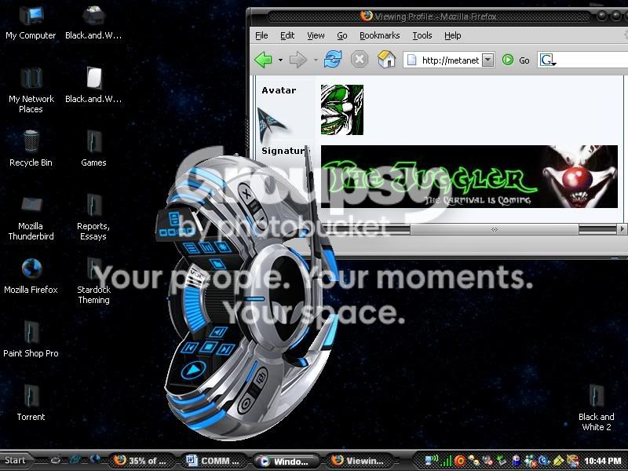

#2229 1 2005-03-18T00:03:39Z Lancer I don't know about you guys, but I have a fetish for other people's desktops.
Mine is loaded with a ton of crap that I'm too lazy to put in a folder and my dad always changes the background, so I don't even bother changing it back anymore.
My Desktop.
This game has one rule: Don't use img tags if your resolution is above 320x240.
#54597 2 2005-03-18T00:06:20Z nevermore Yuck. Yours is so cluttered!
#54601 3 2005-03-18T00:34:18Z TornadoTK I don't see N on your desktop. Mare and Raigan are not pleased.

Here's mine:
Desktop#54602 4 2005-03-18T00:59:04Z Guest Ewww, I feel so dirty, now.
I'm a desktop!#54613 5 2005-03-18T01:51:46Z stepself #54614 6 2005-03-18T02:28:26Z nevermore Nice, stepself. Worms Armegeddon is possibly the best game ever. Tied with Monkey island!
#54617 7 2005-03-18T03:00:28Z stepself Quote: so_what?, Mar 17 2005, 09:28 PM
Tied with Monkey island!
Never heard of that one... but right now, I don't need any additional distractions than I already have!! I'll check it out some other time.
#54620 8 2005-03-18T03:42:53Z nevermore Check out my personal favorite of the saga, "The curse of monkey island" and then my second favorite "Escape from monkey island"...
*scrounges up a pic*
The curse!
Escape!
Escape's in 3d, in case you didn't know. They're awesome, and random, and crazy. Lots of chickens and monkeys.
#54621 9 2005-03-18T03:45:30Z TornadoTK Worms Armageddon: Gotta love it.
My highest score for the ninja roping training was around 200. Yay.
#54632 10 2005-03-18T05:11:16Z Banannakid Here's my computer...
I practice fung schwea, the ancient art of rearranging my desktop incons into a patternt that generates positive energy.
Check out my uptime! Whoo! And I've had no performance problems, either.
 *link* Go easy on my bandwidth, okay? Please?
*link* Go easy on my bandwidth, okay? Please?#54635 11 2005-03-18T06:17:38Z AtomicShadow I can't stand messy desktops. I have the things I like to use most on my desktop.
My Desktop#54636 12 2005-03-18T06:47:03Z Guest Heh, As do I. I only keep what I need desperately on my desktop.
#54640 13 2005-03-18T07:34:50Z trib4lmaniac Now I feel a bit boring
 My Boring Desktop
My Boring Desktop#54642 14 2005-03-18T07:39:36Z Lancer Banana and Shadow, you guys have sexy desktops. I know my dad would be pissed if I downloaded WindowBlinds or whatever it's called.
#54645 15 2005-03-18T07:48:02Z Guest Eww, eww, and more eww. What is up with you boring tidy people? You call yourselves gamers? You're all lucky you guys caught me in a tidy spot. Otherwise, I'd have the entire screen full.
#54647 16 2005-03-18T07:49:35Z Tsukatu Damn, your desktops are
messy. I compulsively organize everything in a categorical and very thorough/specific jungle of folder trees...
"Fun Sound Effects!" is my link to my dial-up connection, for those times I can't have my DSL with me.
The thing in the center is a feature of my laptop. By touching a corner of the touchpad, I can bring up that folder full of shortcuts.
Warning! 1440 x 900 resolution!#54650 17 2005-03-18T08:03:49Z Guest Hehehe, folder trees are insanely fun, especially when you're hiding your po...tatoes deep within. Um... yeah.
#54655 18 2005-03-18T09:33:22Z trib4lmaniac Hehehe, folder trees are insanely fun, especially when you're hiding your po...tatoes deep within. Um... yeah.
Yeah, it's imperative to hide your potatoes

#54677 19 2005-03-18T17:49:40Z sweep #54678 20 2005-03-18T17:54:21Z trib4lmaniac Hey thats cool sweep.
*goes to try it out*
#54681 21 2005-03-18T18:11:09Z sweep #54685 22 2005-03-18T19:21:11Z AtomicShadow My calander automaticly updates itself too and I can post important crap all over the place. It's really useful.
(I REALLY don't want to do my book report.)
Here is my
desktop picture if you want it.
#54686 23 2005-03-18T19:28:22Z AtomicShadow Sorry for the double post, but here is the calandar if you want it.
You can change your desktop picture with filters too and it comes with all sorts of neat features.
Calander and desktop changer#54724 24 2005-03-19T01:04:36Z Lancer I used to hide my "potatoes" in a hidden RARed folder with the extension changed to dll.
C:\Program Files\Steam\SteamApps\meatmo@hotmail.com\counter-strike\cstrike\dlls\1\3\1\2\4\
The ...\1\3\1\2\4\ thing was a huge folder labyrinth with a bunch of dead ends. Very sneaky, indeed.
Edit: Suki, is that a nude woman eating a zombie?
#54727 25 2005-03-19T01:11:12Z Guest Yeah, I have a folder tree of A-Z, a-z, and AA-ZZ, with each individual folder leading all the way down.
#54729 26 2005-03-19T01:14:09Z nevermore Instead of having folder trees, I have a life... I mean... what?

#54755 27 2005-03-19T03:29:19Z Banannakid You weirdos and your potatoes!

#54761 28 2005-03-19T03:58:00Z astro I'll post mine once I get back to my _own_ PC. I've just downloaded a crapload (200-ish) National Geographical wallpapers and use one of my python scripts to swap 'em at startup. I like keeping my icons at the corners of the screen so I can see the wallpaper in the middle, as you will eventually see when I post a pic.
Speaking of folder trees, at school I made a 30-folder long tree, starting at "PORN" and ending at a folder with a single text file ("no porn here"). Then I put it in the submissions drive for our teacher.
#54782 29 2005-03-19T07:52:11Z Teedle I'll post my laptops one when I'm at school. It's much cooooler!
The school tracks our internet usage on our laptops- even (is this illegal?) on our home internet........
Yeah. I always write stuff like
"
www.porn/xxx/masturbate/lesbian/illegal/illicit/game/ratedr/games/music/download/freemusicdownloads/porn/napster/hi_tech_office_are_you_reading_this/tits.com"
I always make it complicated no, since I once came up with a real site. (It was something along the lines of "
www.porn/xxx/illegal/hitechoffice.html" or something like that....
#54788 30 2005-03-19T10:37:35Z JeR(K) *Doesn't want to post his desktop as it's filled with pirarey stuff.*
#54789 31 2005-03-19T10:38:11Z Eli I use Mac OS X, which treats the Desktop as just another folder. I've been using it as my 'One folder where I stick all my potatoes', and it's really stupid looking when you actually look at the desktop on the desktop, instead of in a window. All the files are just lined up in a random order in stupid rows.
#54793 32 2005-03-19T11:05:08Z sweep Atomic shadow - nice desktop, where do you get it from? I think one of my mates is responsible for it!
#54796 33 2005-03-19T11:12:14Z astro @suki: What desktopy themey shell thingo are you using?
#54798 34 2005-03-19T13:51:00Z trib4lmaniac #54841 35 2005-03-19T19:29:22Z iangb Here is mine... (dunno what res it is though)
desktoppy
The background is from a highly cool site called
caedes.net. This one's in the abstract section.
#54848 36 2005-03-19T19:56:56Z nevermore That's a really cool background, ian.
My computer's gone, so I can't take a pic of the desktop. *sigh*
#54858 37 2005-03-19T20:26:43Z TornadoTK I keep all my needed stuff in the Quick Launch. Desktop is for recent things, or stuff that will be deleted soon.
#54859 38 2005-03-19T20:28:22Z nevermore I put the stuff I need in my dock. Right now, there's really nothing on my desktop.
#54895 39 2005-03-19T22:26:31Z AtomicShadow Thx sweep. I found it on that website. I hated the messed up eyeball that was supposed to be blinking in the circle so I just left it as the desktop. No wiggily eyes for me.
#55391 40 2005-03-22T20:24:19Z Guest here's my current laptop
desktop!
I change the image a lot, but it's been this way since the igf, at least.
look out, 1280x800.
#55399 41 2005-03-22T21:07:52Z Maniac <PRIVATEZ0RED>
#55402 42 2005-03-22T21:16:46Z nevermore Maniac, you disgust me. NO BACKGROUND!? lol.
I have snood too! I love that game, but not as much as I love N.
I'm sort of ashamed of posting my desktop, cuz it's not mine. It's my mom's and it's really lame.
Mare, I love cows too...
#55407 43 2005-03-22T21:29:15Z LouDog004 Katamari Damacy is crazy awesome. I was so sad when I finally beat it because there were no more levels. Getting the comets on the early levels is really hard for me though, so I haven't finished that yet.
#55421 44 2005-03-22T22:42:16Z Guest 
Where's N?
N's in a number of folders -- dev folders, the games folder...
but if you'll notice, there _is_ an N projector we used at the igf there.
Mare, I love cows too...
It's not so much the cows I love, but katamari damacy. The sequel's coming out soon...
#55709 45 2005-03-24T09:05:05Z tktktk Dangit, Katamari Damacy's one of the few reasons I'd actually want a PS2.

#55710 46 2005-03-24T09:08:15Z nevermore What is Katamari Damacy? A playstation game, of course, but what's it like?
#55755 47 2005-03-24T15:43:15Z Guest In my experience, description of what you do seriously doesn't do the game justice. watch:
you roll this big spikey ball, called a katamari, around the earth. It's sticky, so it picks up things as you roll it over them. You can only pick up stuff which is smaller than your katamari, but as you pick up more and more, it grows, which lets you pick up larger things.
Eventually, your katamari grows so large you can pick up people, animals, vehicles, buildings, stadiums and finally the islands and clouds.
(here most people I describe it to go 'and that's it?! you roll a ball around picking up stuff?!' -- yeah, that's it, but it's a lot more fun and addictive than it sounds!)
It's a really funny game, too -- in that abstract, random Japanese sort of way.
Also, the control of the katamari (and the prince, who does the rolling) is awesome -- so simple, yet so deep. You only really use the two analog sticks.
Oh, and finally, the soundtrack is really great.
You have got to play this game!
(^^ that was directed at everyone)
#58112 48 2005-04-03T21:34:16Z jeffkillian I have at my friend bens house. i like picking up people and watching them squirm
#58402 49 2005-04-04T23:02:52Z glenno14 how do you take a picture of the desktop?
#58424 50 2005-04-05T00:03:02Z Guest on windows, press [prtsc] (printscreen), and then paste into Paint or Photoshop or whatever
on mac, press [command]+[shift]+[3] (command is the key with the apple on it)
--> or use Grab (OSX)
#58491 51 2005-04-05T06:02:42Z makron I posted mine but it just plonked it in the page making it huge. Sorry.
#58528 52 2005-04-05T15:46:29Z glenno14 My desktop
this is the first image i have posted so dont blame me if i posted it wrong...
EDIT: why is the pic so small?
#58529 53 2005-04-05T15:54:52Z stepself EDIT: why is the pic so small?
Photobucket resizes large pictures. I don't know how to circumvent it. Try a different storage website, like
this one.
#60604 54 2005-04-18T22:46:08Z wedgie argh some horrible cluttered desktops there, i have a fair bit on mine but its not cluttered
.
heres my
desktop

#60711 55 2005-04-19T14:08:56Z astro I have a desktop that is far more ordered than my _real_ desktop, with everything on the corners. I've got a python script that randomly selects a National Geographic wallpaper at startup.
my desktop
EDIT: @suki: What desktopy themey shell thingo are you using?
#61476 57 2005-04-23T02:28:13Z great_sea My desktop. Extremely minimalistic, and some would even say: cold.
 Here it is
Here it is
If anyone cares; imageshack.ws is a pretty good free image hosting site.
#61484 58 2005-04-23T03:16:45Z LouDog004 I have nowhere to host my desktop image, but it's very simple. There is only the recycle bin and one folder that holds all my frequently used stuff. I use
Astronomy Picture of the Day Archive for my desktop background.
#61515 59 2005-04-23T13:32:54Z astro AoS, post a link.
#61516 60 2005-04-23T13:33:56Z trib4lmaniac Host it on
imageshack LouDog, free, no registration etc. etc.
#61530 61 2005-04-23T13:50:52Z astro I use Astronomy Picture of the Day Archive for my desktop background.
Nice link, I think I'll get some wallpapers from there.
#61532 62 2005-04-23T13:52:12Z trib4lmaniac #61582 63 2005-04-23T17:56:36Z nevermore My desktop changes every 15 minutes.
The bunny cartoons on a black background.
#61681 64 2005-04-23T22:38:48Z Azmilion Heh, I like this one.
ROFL
i noticed this name G. Neukum
wich translated in to dutch kinda means G. F*ck em
#63208 65 2005-05-01T21:01:26Z wilderness those cartoons are ace, never.
my desktop.

#63231 66 2005-05-01T22:06:25Z nevermore 'Tis mini. Really mini.
#63235 67 2005-05-01T22:33:12Z wilderness lol, silly, click on the image.
or did you mean minimalisic?
#63260 68 2005-05-01T23:06:57Z nevermore 
I'm retarded, most probably.
No, I meant mini as in bite-sized. I didn't click on the link.
#63261 69 2005-05-01T23:14:32Z glenno14 hey pariah how did you get your taskbar thing to turn black?Its cool.
#63266 70 2005-05-01T23:28:00Z wilderness a patch for windows. i'll PM you the info.
#63366 71 2005-05-02T13:12:56Z wedgie pariah, dude! please send it me tooooo
#63378 72 2005-05-02T15:09:54Z wilderness okay, but anyone else, please ask me outside of the forum.
#63474 73 2005-05-03T01:06:12Z Banannakid I felt like re-posting
my desktop. It's now 1280*960.
#63477 74 2005-05-03T01:18:51Z jeffkillian I decided to post
My Desktop after looking at others...
Too lazy to delete all the extra crap on it(zoo tycoon).
#63486 75 2005-05-03T01:39:11Z wilderness jeff...
how can someone in possesion of the most stylish sig in the forum, also be the father of this abomination?!?
truly, i am bewildered!!!
#63488 76 2005-05-03T01:41:36Z jeffkillian ABOMINATION
*laughs*
*realizes he is laughing in a room all alone*
*feels very lonely*
haha no idea. O btw...im thinking of changing my sig to n running and filling in the "I" spot(in jeffkillian), and then doing a victory dance...should I?
#63497 77 2005-05-03T01:52:44Z wilderness YES!!!
*claps at the notion*
that would be SO awesome
EDIT: did i mention i'm a total geek?
#76137 78 2005-06-18T16:50:11Z jetcombo15 #76244 79 2005-06-18T21:55:52Z Eldrial Darth Kevin
i had quite some fun making my desktop. just made it today. [that's me]
it's quite blurry though... [me]....
otherwise, my desktop is quite clean.
#76284 80 2005-06-19T02:03:58Z Red Reamer 
Just thought I'd clear something up. That car is mine, it is a Ford PROBE. Hence the folder on my desktop is pictures of my car, not of anal probes.
#76468 81 2005-06-19T15:50:11Z wedgie im gonna repost mine too as ive changed themes and backgrounds
 my desktop
my desktop#76476 82 2005-06-19T16:03:31Z LoD my desktop shows one of my 2 turtles
this one is the smaller one, the male one and a russian one (four times one! my style is
bad!)
however, it is called ... well ... it has no real name
that's how my family members call him:
mother -> Johannes Paul (obvious)
granny -> Paul Johannes (obscure)
brother -> Iwan (remember, it's a russian turtle)
father -> Kurt (you have to know: he calls everything Kurt - the current frog, the current bug, the current fish, ...)
Attachment (lost): post-6-1119197011.jpg
#76604 83 2005-06-20T05:45:31Z Eldrial i liked pariah's desktop, and i had this Star Wars pose in mind from Clone Wars [animation series] [people who may have seen it will probably know what i'm talking about]
that's me again! good ol' Photoshop.
My Desktop#76613 84 2005-06-20T06:27:56Z Red Reamer Nice. Gotta love photoshop. I saw a tutorial the other day about creating your own lightsabers. Might look cool.
#81522 85 2005-07-06T18:46:15Z jetcombo15 #81530 86 2005-07-06T19:12:00Z brickman 1 question: how?
#81534 87 2005-07-06T19:34:41Z Maniac Another question: why?
#81556 88 2005-07-06T21:34:02Z Coldfire how =
Stardock
Stardock is a company that makes many programs that change the GUI (graphic user interface) of your computer. For one that changes your desktop, like jetcombo's screenshot, use DesktopX. For one that changes the way your windows, taskbars, etc. look, use Window Blinds.
For a list of programs, there is a sidebar on the
www.wincustomize.com site.
Note: not all programs are made by stardock.
#81572 89 2005-07-06T22:11:24Z glenno14 heres mine...i had to make it a bit small cause imageshack has a limit....

#81576 90 2005-07-06T22:42:59Z brickman Tibia? But. . . thats almost as bad as runescape! How can you play that thing?
#81607 91 2005-07-07T01:38:25Z Coldfire lol, i have pivot too
the same wallpaper
and use firefox too
I'm surprised this hasn't turned into a web browser fight....

#81658 92 2005-07-07T12:06:59Z glenno14 Tibia? But. . . thats almost as bad as runescape! How can you play that thing?
I played it when i first got my computer. I never knew there were amazing games like N to find. I have to admit though, I still play tibia every now and then. Im a level 22 knight which is pretty crap....I play better games than that now. Theres a game called conquer online that I play which I really like. Im level 54 in that....this is getting kinda offtopic.....
#81672 93 2005-07-07T13:36:48Z Red Reamer And in to nerdy pooey game land. I really really really despise runescape. REALLY.
Note: I didn't say gay. Cause everytime I say gay, someone takes it literally. Thought I'd point that out.
#84522 94 2005-07-19T01:43:32Z S-Mies So. Here's my
old desktop... and here's the
new one. I actually did 5 minutes of desktop cleaning for the newer image x) My desktop is almost never in sight, so stuff just keeps on piling on it:P
EDIT: The broken ice lantern photo is taken by a friend of mine, Jarok. More of his work can be found at
Deviantart and his
home page.
#84576 95 2005-07-19T05:18:19Z 7! I keep my desktop as clean as possible. I only put stuff there that I absolutely use 24/7.
ACK! My name was on the Mac hd.
My wallpaper changes every 15 minutes, and yes, that is Mac OS X Panther in the background. I keep my N files in My DOcuments. Everything else is in All Programs, [start menu], or I go to my computer/C:/ and go look myself. Atomic SHadow, I have PJ 64 1.6, too! Great program. The task tray: From right to left, Time, Logitech Keyboard iTOuch software, Wallpaper Changer, Local Area COnnection-10mb/s, wireless connection-11mb/s.
Attachment (lost): post-6-1121750411.jpg
#99256 96 2005-09-10T21:11:21Z glenno14 I know I know "ressurection" but I thought we had took that rule away.
Anyway. I tidied my desktop up quite a bit. Here it is now.

The picture in the top left is just a picture I like so I put it there....
#99277 97 2005-09-10T21:54:34Z LittleViking link
Hm. I need a new wallpaper...
#99359 98 2005-09-11T00:16:21Z Jesse Glenno can you tell me how you got that clock on your desktop?
#99362 99 2005-09-11T00:20:31Z glenno14 #99432 100 2005-09-11T02:37:07Z Ushnor Ushnors desktop!
Hmmm... I missed a few old WoW things when I cleaned it up yesterday...
EDIT:
I cleaned my desktop better!
Ushnors better desktop! #99472 101 2005-09-11T04:26:59Z KinGAleX Jumping on the Band wagon.
Right here.#99556 102 2005-09-11T13:44:38Z 7! Yeah. Updated version after 2 formats.

#100994 103 2005-09-16T13:59:28Z Disintegrator Hehehehehehe, here's my desktop....
Attachment (lost): post-6-1126879168.jpg
#101042 104 2005-09-16T21:07:05Z blue_tetris All of your desktops are too crispy and well-managed. They've got no soul--just product placement and contemporary design. An empty desktop is the sign of an empty mind. Now
this. This is a desktop (edited for occupational hazards):
Attachment (lost): post-6-1126904825.gif
#101048 105 2005-09-16T21:18:48Z Grimreaper0125 This is mine.
Attachment (lost): post-6-1126918775.jpg
#101050 106 2005-09-16T21:32:28Z glenno14 @bluetetris- MY desktop used to be like that....bt for some reason I got....jealouse of all these clean ones....ah well....
#101092 107 2005-09-17T00:32:25Z 7! Hey, my sn, Nibby421, is in grim reaper's buddy list!
Use paint to edit sn's and names out.
#101095 108 2005-09-17T00:55:49Z Grimreaper0125 O.k. Sorry, forgot the bit about personal stuff.
I just got the Konfabulator thing, it's so awesome. I also changed my desktop around a lot, to seperate my stuff from the rest of the familys stuff.
Attachment (lost): post-6-1126922428.jpg
#103007 109 2005-09-23T16:02:48Z monkey_man_5 woah,this isn't ven a ressurect(sp?)...well,this is my desktop.yeah,i hand made that(i used the GIMP)some a bit most about half of those icons are not mine.
Attachment (lost): post-6-1127491368.jpg
#103037 110 2005-09-23T20:24:17Z 7! I've got 2 desktops, (dual boot XP Pro and 2000 pro).
I love windows 2000 more than any os. It just smacks the llama's @$$ for me.
Here's 2000. I'll post XP when I'm done copying the pictures in drive H, (3.62 GB DVD).
Attachment (lost): post-6-1127507057.jpg
#107281 111 2005-10-11T11:23:39Z LittleViking I changed my desktop, here it is now.
Follow the link#107343 112 2005-10-11T19:53:18Z 7! Hah. Mine is updated.
Attachment (lost): post-6-1129060398.jpg
#107359 113 2005-10-11T21:38:14Z 7! Sorry for the ddouble post, but I just came across this.

#113129 114 2005-11-07T23:49:17Z Sgt. Poptarts 
This is mine.I think it look really high tech.
#113131 115 2005-11-08T00:04:11Z Evil Bob Here is mine. Just so you know my backround canstantly changes (It used to be a nuke) and some odf the icons are there because I sometimes let my little bro on my computer untill I made him a user.
Desktop#113187 116 2005-11-08T03:20:49Z spzbt 
That's my desktop. You might notice that there's
absolutely nothing on it. I don't like shortcuts on my desktop. They're like evil little aliens trying to take over my desktop. After so long, I can't even tell what my wallpaper is, so I just get rid of them. That and I never use them.
#113199 117 2005-11-08T03:49:18Z The_Juggler 
I would like to apply for the title "Coolest Desktop"
I dare somebody to post a cooler desktop
#113294 118 2005-11-08T22:02:01Z wedgie will post my very empty desktop now
here #113344 119 2005-11-09T02:56:27Z Sgt. Poptarts I updated my Desktop.

#113404 120 2005-11-09T12:14:45Z iangb
That's mine, at the moment.
#113410 121 2005-11-09T13:19:17Z Guest my desktop
all those icons in the menu used to be on my desktop
#113411 122 2005-11-09T13:20:03Z Azmilion *AHEM*
that was me btw
Attachment (lost): post-6-1131542403.jpg
#113448 123 2005-11-09T20:57:30Z spzbt That is a lot of shortcuts, I think around 42 or so... and.. what's that wallpaper from, I think I've seen it before... maybe not, but just wondering.
#113611 124 2005-11-10T21:24:23Z Azmilion Fable: The lost chapters,
thats the Archon Battle plate.(the one you get from the 25 key chest ^_____^)
this is my new BG
first one to name 10 of the programs by icon gets a cookie
Attachment (lost): post-6-1131657863.png
#113632 125 2005-11-10T22:01:16Z Sgt. Poptarts Darn,I can only name 8 of them.
Doom 3
Fable
Unreal
Mozilla firefox
soldat
MS Paint
Grand Theft Auto
And I think one of them is Neverwinter Nights.
#113639 126 2005-11-10T23:11:13Z 7! Firefox
Internet Explorer
Paint
GTA San Andreas
DAEMON Tools
Soldat
Unreal Tournament
Doom 3
Fable
Wait...that eye...Viewpoint
OR
Photoshop
#113714 127 2005-11-11T04:03:56Z spzbt 
That's my current updated desktop. I was bored, so I changed to a Mac-ish theme. Yeah...
#113806 128 2005-11-11T13:33:56Z Azmilion Digit boy got 6 right
Poptarts got 7 right
the list is
BAMZOOKi
BlockCAD
Bridge Construction Set
Paint Shop Pro X
Warhammer 40K:Dawn of War
DOOM3
Dungeon Siege 2
Earth 2160
Eets(IGF competitor)
Emperor Battle for Dune
Fable:The Lost Chapters
FRAPS
Gem River(also a IGF comptetitor me thinks)
Ground Control
GTA:SA
1nsane
Indigo Prophecy(Fahrenheit)
Motorcross Madness
Narbacular Drop(IGF),GET THIS GAME IT ROX
NeverWinter Nights
Pacific Fighters
Paint.NET
Photofiltre(what the hell is this doing here)
Armed and Dangerous
Thief Deadly Shadows(DEMO)
UT2004
Pogosticker
Porrasturvat
Rome:Total War
Rumble Box(Digipen game)
Homeworld
DEAMONTOOLS hider(so i can play F.E.A.R)
TorrentStorm
SkiStunt
Soldat
TAspring
Total Overdose
Tron 2.0
FireFox
Silver Knights
F.E.A.R.
Paint